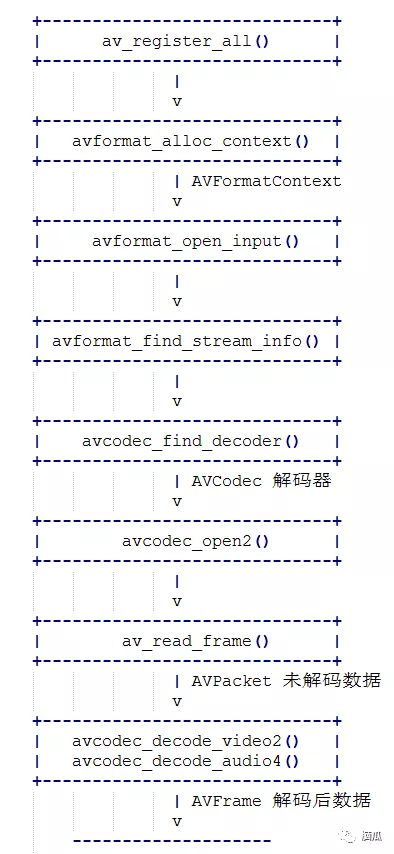

ffmpeg解码音视频过程
ffmpeg有两个重要的结构体
- AVPacket 保存未解码的数据.
- AVFrame 保存解码后的数据.
解码流程

代码
//***************************************************************
// @file: test.c
// @author: dingfang
// @date 2019-07-24 18:55:16
//***************************************************************
#include <stdio.h>
#ifdef __cplusplus
extern "C"
{
#endif
#include <libavcodec/avcodec.h>
#include <libavformat/avformat.h>
#ifdef __cplusplus
};
#endif
int openCodecContext(const AVFormatContext *pFormatCtx, int *pStreamIndex, enum AVMediaType type, AVCodecContext **ppCodecCtx)
{
int streamIdx = -1;
// 获取流下标
for (int i = 0; i < pFormatCtx->nb_streams; i++)
{
if (pFormatCtx->streams[i]->codec->codec_type == type)
{
streamIdx = i;
break;
}
}
if (streamIdx == -1)
{
printf("find video stream failed!\n");
exit(-2);
}
// 寻找解码器
AVCodecContext *pCodecCtx = pFormatCtx->streams[streamIdx]->codec;
AVCodec *pCodec = avcodec_find_decoder(pCodecCtx->codec_id);
if (NULL == pCodec)
{
printf("avcode find decoder failed!\n");
exit(-2);
}
//打开解码器
if (avcodec_open2(pCodecCtx, pCodec, NULL) < 0)
{
printf("avcode open failed!\n");
exit(-2);
}
*ppCodecCtx = pCodecCtx;
*pStreamIndex = streamIdx;
return 0;
}
int main(void)
{
AVFormatContext *pInFormatCtx = NULL;
AVCodecContext *pVideoCodecCtx = NULL;
AVCodecContext *pAudioCodecCtx = NULL;
AVPacket *pPacket = NULL;
AVFrame *pFrame = NULL;
int ret;
/* 支持本地文件和网络url */
const char streamUrl[] = "./test.flv";
/* 1. 注册 */
av_register_all();
pInFormatCtx = avformat_alloc_context();
/* 2. 打开流 */
if(avformat_open_input(&pInFormatCtx, streamUrl, NULL, NULL) != 0)
{
printf("Couldn't open input stream.\n");
return -1;
}
/* 3. 获取流的信息 */
if(avformat_find_stream_info(pInFormatCtx, NULL) < 0)
{
printf("Couldn't find stream information.\n");
return -1;
}
int videoStreamIdx = -1;
int audioStreamIdx = -1;
/* 4. 寻找并打开解码器 */
openCodecContext(pInFormatCtx, &videoStreamIdx, AVMEDIA_TYPE_VIDEO, &pVideoCodecCtx);
openCodecContext(pInFormatCtx, &audioStreamIdx, AVMEDIA_TYPE_AUDIO, &pAudioCodecCtx);
pPacket = av_packet_alloc();
pFrame = av_frame_alloc();
int cnt = 30;
while (cnt--)
{
/* 5. 读流数据, 未解码的数据存放于pPacket */
ret = av_read_frame(pInFormatCtx, pPacket);
if (ret < 0)
{
printf("av_read_frame error\n");
break;
}
/* 6. 解码, 解码后的数据存放于pFrame */
/* 视频解码 */
if (pPacket->stream_index == videoStreamIdx)
{
avcodec_decode_video2(pVideoCodecCtx, pFrame, &ret, pPacket);
if (ret == 0)
{
printf("video decodec error!\n");
continue;
}
printf("* * * * * * video * * * * * * * * *\n");
printf("___height: [%d]\n", pFrame->height);
printf("____width: [%d]\n", pFrame->width);
printf("pict_type: [%d]\n", pFrame->pict_type);
printf("___format: [%d]\n", pFrame->format);
printf("* * * * * * * * * * * * * * * * * * *\n\n");
}
/* 音频解码 */
if (pPacket->stream_index == audioStreamIdx)
{
avcodec_decode_audio4(pAudioCodecCtx, pFrame, &ret, pPacket);
if (ret < 0)
{
printf("audio decodec error!\n");
continue;
}
printf("* * * * * * audio * * * * * * * * * *\n");
printf("____nb_samples: [%d]\n", pFrame->nb_samples);
printf("__samples_rate: [%d]\n", pFrame->sample_rate);
printf("channel_layout: [%lu]\n", pFrame->channel_layout);
printf("________format: [%d]\n", pFrame->format);
printf("* * * * * * * * * * * * * * * * * * *\n\n");
}
av_packet_unref(pPacket);
}
av_frame_free(&pFrame);
av_packet_free(&pPacket);
avcodec_close(pVideoCodecCtx);
avcodec_close(pAudioCodecCtx);
avformat_close_input(&pInFormatCtx);
return 0;
}
这里就几个比较重要的函数简单介绍一下.
av_register_all() /* 使用ffmpeg几乎都要调用这一个函数, 注册ffmpeg各种编解码器, 复用器等. */
avformat_open_input() /* 该函数用于打开本地多媒体文件或者网络流媒体url */
avformat_find_stream_info() /* 该函数用于读取一部分音视频数据并且获得一些相关的信息 */
avcodec_find_decoder() /* 由codec_id或者解码器名称来寻找对应的解码器 */
avcodec_open2() /* 初始化解码器 */
av_read_frame() /* 读流数据, 读出来的是压缩数据, 存放于AVPacket */
avcodec_decode_video2() /* 视频解码 解码后数据为原始数据, 存放于AVFrame */
avcodec_decode_audio4() /* 音频解码 解码后数据为原始数据, 存放于AVFrame */